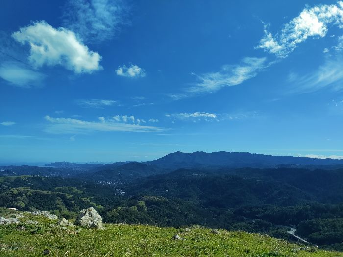

Working With Images
Width: 4624, height: 3472, number of bytes: 3.38 MB

Wdith: 700, height: 525, number of bytes: 56.8 KB
I used
JPEG Optimizer
to optimize a landscape photo I took in Marin County, California.